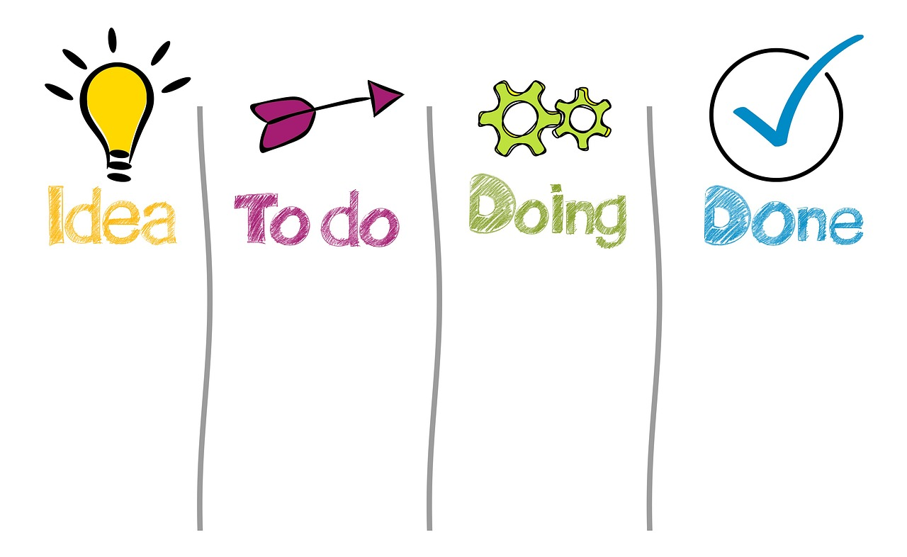

TL;DR
Choosing the right task management tool can significantly enhance project efficiency. Start by understanding your team's specific needs, and follow a structured workflow to evaluate potential tools. Remember, involving your team and testing options are key to avoiding costly mistakes.
Who Must Evaluate Task Management Tools
If you are a project manager or team leader, understanding how to evaluate task management tools is crucial. Many tools promise to improve productivity but fall short when it comes to real-world application.
Consider the case of a marketing team using Asana for project tracking. They assumed it would centralize communication, only to find that key deadlines slipped through the cracks, leaving the team scrambling at the last minute.
Why the Default Approach to Tool Selection Fails

### Why the Default Approach to Tool Selection Fails
Many teams adopt a ‘one-size-fits-all’ mindset when selecting task management tools, often gravitating toward popular options like Trello or Monday.com based solely on their visibility and reputation.
This approach can be detrimental, as it neglects the specific needs and workflows of the team. For instance, a software development team might implement a tool primarily designed for marketing, overlooking essential functionalities such as code repository integrations or agile project management features.
Consider a scenario where a software development team of eight members adopts a generic project management tool without assessing their needs.
Over the first quarter, they may find that the tool's lack of version control integration significantly slows down their development cycles.
Tasks that should take hours might extend to days. This mismatch in functionality can lead to a staggering 30% productivity loss over a three-month period.
Additionally, team morale may suffer due to frustration with a tool that fails to support their daily operations. If engineers spend 10 to 15 hours a week navigating confused workflows and manual updates, the emotional toll can lead to burnout and increased turnover rates.
A Core Workflow to Identify Your Team's Ideal Tool
To evaluate task management tools effectively, follow this structured workflow: 1. Identify Team Needs
Document essential features. Does your team prioritize mobile access or integrations with other platforms? 2. Conduct Research
List potential tools and gather feedback from team members. 3. Test Drive Tools
Use free trials. For example, spend 14 days trialing Asana, ClickUp, or Wrike. 4. Analyze Team Feedback
After a week of usage, gather input and make necessary adjustments. 5. Make a Decision
Finalize the choice based on a consensus while considering long-term impacts, subscription costs, and potential scalability.
A Real Example: Selecting Tools for a Remote Team

### A Real Example: Selecting Tools for a Remote Team
Consider a remote graphic design team working on client-facing projects. Initially, they communicated through Slack for quick discussions and file sharing, but soon realized this dispersed approach led to miscommunication and missed deadlines.
After experiencing a couple of project delays that resulted in a 15% drop in customer satisfaction, they recognized their need for a comprehensive project management tool that could unify their workflow.
Following our proposed evaluation process, the team began trialing three popular tools: Asana, ClickUp, and Trello. They allocated two weeks for each tool, allowing team members to explore features like task assignments, timelines, and integrations with design software such as Adobe Creative Cloud.
During the trial period, Asana's user-friendly interface impressed the team, but they found it lacked advanced reporting features. In contrast, Trello's Kanban-style boards offered visual task management but proved less effective for longer-term projects that required detailed tracking.
ClickUp stood out for its extensive features, including customizable dashboards and built-in time tracking, which aligned perfectly with their project timelines.
After a month of gathering feedback and making adjustments, the team chose ClickUp. They laid out a structured onboarding plan that included a week of virtual training sessions and clear guideline documentation, ensuring everyone felt confident using the new tool.
This initial investment of time and effort paid off remarkably.
In the following three months, the team's project turnaround improved by 25%, drastically reducing the time required for revisions and approvals.
Mistakes and Tradeoffs Workers Frequently Face
### Mistakes and Tradeoffs Workers Frequently Face
Project managers often fall into common traps when selecting task management tools that can derail project efficiency. One frequent mistake is neglecting to involve the entire team in the selection process.
When team members are left out, they may feel disconnected from the tool’s adoption, leading to resistance and decreased engagement. For example, a marketing team might experience a dip in morale and productivity—by as much as 15%—when using a tool that they didn’t help choose.
Another common pitfall is focusing solely on cost, which can lead to significant trade-offs. Opting for a free but limited tool, such as Trello, sounds appealing initially.
However, this can mean sacrificing essential features like integration with existing applications or the ability to scale with user capacity.
In one case, a software development team selected a budget-friendly tool but quickly found it could only support five active users, stalling progress as new team members joined.
They ultimately had to invest in a paid solution six months later, which doubled their initial expense.
For long-term sustainability, it’s important to evaluate the trade-off between initial cost and future capabilities. Selecting a versatile tool, even one with a higher upfront cost like Wrike or Monday.com, can offer advanced features that facilitate scalability and collaboration.
For instance, Wrike's pricing starts at around $9.80 per user per month but includes comprehensive integration capabilities that can save hours of work in the long run.
Additionally, it allows for custom workflows that can adapt to the evolving needs of the project.
Next Steps: Turning Your Decision Into Action
Once you've selected a task management tool, integration is key. Start by mapping the tool into your existing workflow. Designate specific team members to lead the transition over the next 30 days, ensuring there's a support system in place.
Additionally, establish a weekly check-in for ongoing evaluations of how well the tool is serving your goals. Make note of any issues and adapt quickly.
Encourage team members to share their observations, creating an agile environment that enhances productivity
FAQ
What are the key features to look for in task management tools?
Key features include user access levels, integration capabilities with other tools (e.g., Slack, GitHub), reporting functions, and ease-of-use.
How can I ensure team buy-in when adopting new software?
Involve team members early in the selection process, gather their input through trials, and ensure that the chosen tool addresses their specific challenges.
This article has been reviewed for practical usefulness and is updated when information changes.
Turn this into a workflow
Do not stop at ideas. Pick one workflow, test it for 14 days, then keep only what reduces friction.
Search more articles
Find related tools, workflows, and guides.